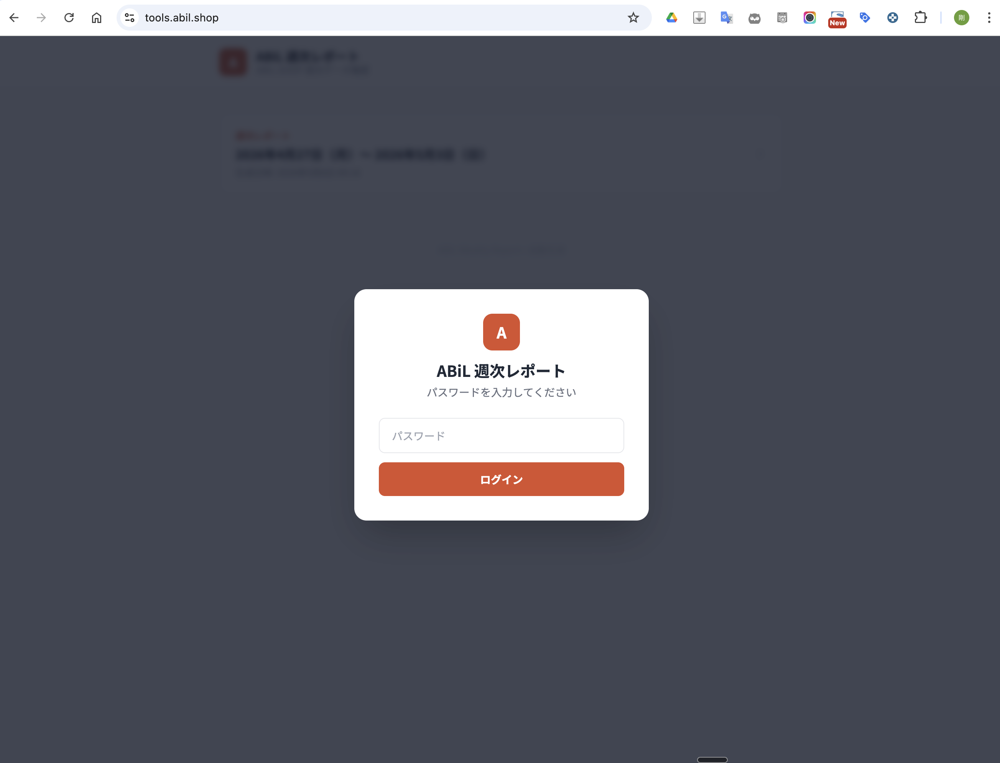
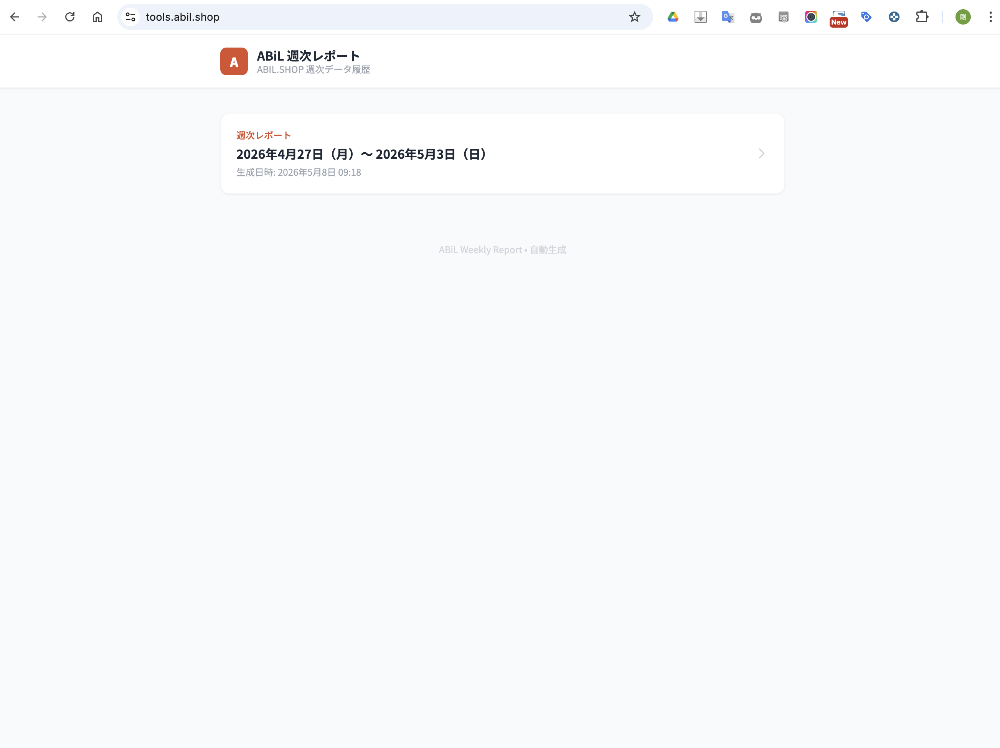
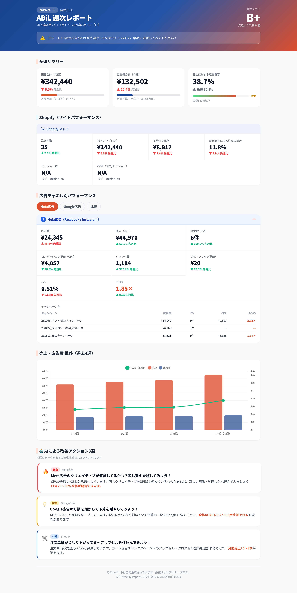
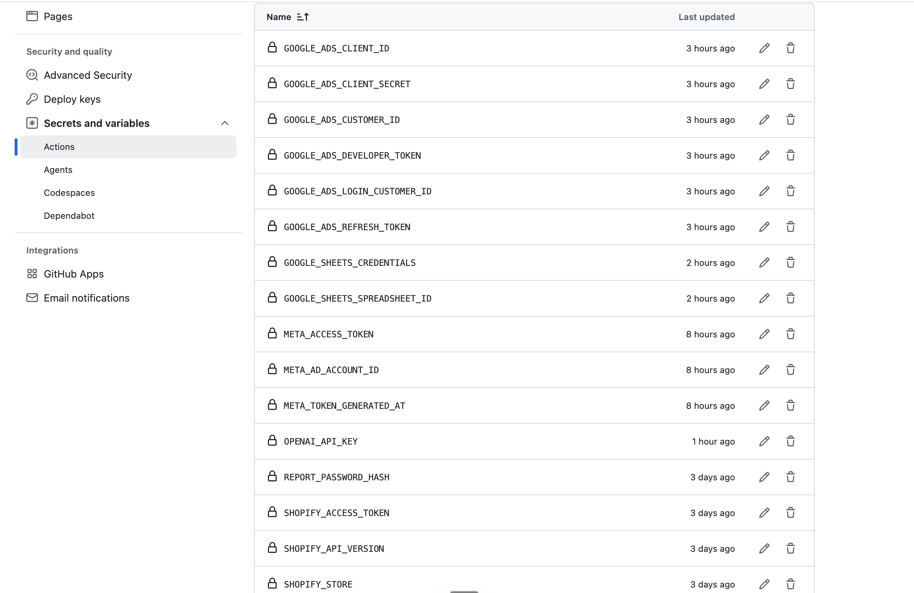
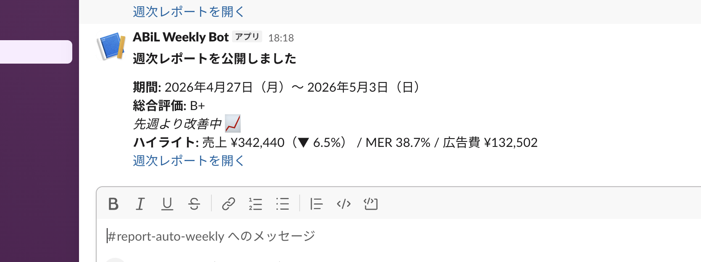

週次レポート自動化ツール
ひとことで言うと ── EC と広告の数字を自動で集め、レポートページを更新し、Slack に届ける「週一回の運用」をプログラムに任せる仕組みです。
このページは、その設計と画面、つまずきと解決の整理です。処理全体の回路図は別紙の図解を参照してください。
提出要件への対応チェック
実画面（スクリーンショット）
実際に取得したスクリーンショットを掲載しています。一覧画面と詳細画面の見え方から、運用時の導線と情報のまとまりを確認できます。



API 設定で詰まった場面（追加スクリーンショット）
Shopify・Meta広告・Google広告の各APIで認証や設定項目が異なり、最初はどこで詰まっているかの切り分けに時間がかかりました。 分からない画面はその都度スクリーンショットを取り、AIに状況を共有して解決手順を確認しながら進めています。

GitHub Actions 実行と Slack 到達の確認
実際に GitHub Actions を手動実行し、ワークフロー完了後に Slack へレポート通知が届くことまで確認しました。 これにより、「取得 → 生成 → 配信」の一連フローが実運用でも動く状態であることを検証できています。

2. 全体像（4パーツ）
自動化は「起動 → 収集 → 加工 → 配信」の一本化
複数データ源でも、頭の中の地図はこの4つの役割に収めると説明しやすい
詳しい回路図
「週次レポート自動化ツールの仕組み」（4パーツ別紙）
GitHub Actions・取得元・加工・Slack までを色分けで分解した、外部公開の詳細図解ページへジャンプします。
4つのパーツの決め方
説明するときに「スクリプトが頑張る」だけだと聞き手の頭に負荷がかかるので、運用の時間軸に沿って役割を4つに分割しました。GitHub の YAML や Python のファイル名より先に、この地図を共有するのが意図です。
うまくいった点
- 「サーバーを持たない定期実行」（GitHub Actions）をトリガーに置くと、インフラを語らなくて済む。
- ソース元・処理・配信の境界がレビューやログ調査にも直結する。
メモとの対応
ワークフロー上は Shopify → Meta → Google → Sheets → LLM の順など細かい順序がありますが、それらはすべて「ソース元」のあと、「処理」の中で直列に並んでいる、と見なせます。
デザイン・実装での工夫
画面（レポート HTML）
ヘッダーはブランドカラーのグラデーションで視線をまとめる。主要指標はタイル、チャネル深掘りはタブへ分離して読む順番を設計しました。
データとテンプレの分離
取得結果を JSON に収束させ、表示は Jinja2 側に限定。コンポーネントの責務を揃えると変更に強くなります。
CI とグレースフルデグレード
一部 API が落ちてもレポート生成を続ける方針（continue-on-error と stderr）で、運用での「全区赤」状態を避けます。
週次データの横向き蓄積
スプレッドシートは指標ラベルを A 列に固定し週ごとに列が増える形。グラフ用の縦持ちへの変換ではなく、現場の閲覧に合わせたレイアウトです。
ぶつかった課題と解決の型
開発メモから、再現しやすい論点だけ抜き出しています。
設定調査の進め方（実務上の工夫）
Shopify・Meta広告・Google広告は、必要な認証方式や管理画面の導線がそれぞれ異なります。 そのため、不明点が出た時点で画面をスクリーンショット化し、AIに「今どの画面で何に詰まっているか」を渡して、次の確認ポイントを一つずつ潰す形で進めました。
現象・制約
公式クライアント経由の通信が環境依存で不安定
Python ランタイムと gRPC の組み合わせで検索ストリームが解決できないケースがある。
打ち手
Google 広告は REST で GAQL を投げる
HTTP だけに寄せてデバッグの見通しと移植性を稼ぐ。 （メモ・実装方針に基づく）
現象・制約
REST の API バージョンが無言で変わり 404 が出る
古いパスへ向けたコードは突然止まり、ログから原因が読みにくい。
打ち手
運用時点で有効なバージョンに固定してドキュメント化
廃止予定一覧をセットでチェック。 （開発メモ）
現象・制約
プラットフォームが「高度な分析 API」を公開していない
権限より先にプラン側の機能差で取れない指標がある。
打ち手
取得失敗時は静かに握りつぶさずログし、別ソースをロードマップへ
「欲しい KPI」と「無償公開 API」のギャップを早期に明示する。
現象・制約
LLM と CI の組み合わせで設定が増える
複数プロバイダの鍵があると優先順位が不透明になり、アクションだけがサンプルのまま残ることがある。
打ち手
GENERATE_ACTIONS_PROVIDER など環境変数で優先順を一文で固定
soft-fail 時はワークフローを赤にしないがログで判別。 （運用メモ）
メタ・運用での学び（短く）
- OAuth：同意画面がテスト公開のままだと refresh の寿命が短い。運用ロックを避ける公開設定が必要になる。
- Meta アクセストークン：種類によって期限が頭に載りやすく、Secrets のローテ手順もセットで決める。
- サービス連携鍵の露出：スクショ・リポジトリ・チャットへの混入をルール化する。
提出時のセット
読み順の提案
- 本ページでツールの価値と画面の読みどころを掴む
- 詳細回路図ページで GitHub Actions 起点の流れを追う（外部公開URL: diagram-report-automation-flow.surge.sh）
- 最後に課題と解決の型を確認し、再現性のある改善ポイントを持ち帰る
GitHub Pages へのデプロイ後は、ワークフロー成果物の環境によりパスが変わります。通常は サイトの公開URLreference/assignment-overview.html（相対または絶対）で閲覧できます。